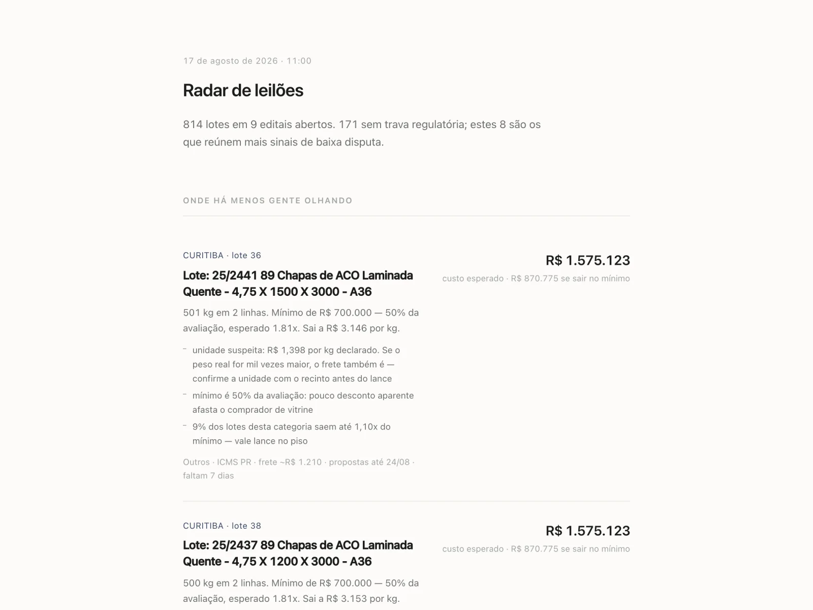

Radar de leilões
Onde olhar primeiro nos leilões da Receita Federal

O que muda no seu negócio
Em vez de ler centenas de lotes, você lê oito. O radar separa o que tem trava regulatória, o que tem unidade de medida suspeita e o que costuma fechar perto do mínimo.
Você chega ao leilão sabendo onde a disputa é menor e quanto o lote tende a custar de verdade, com imposto e frete dentro.
O problema
O valor mínimo do edital não diz nada sobre o preço final. E o lote barato costuma ser barato por um motivo escondido no texto: cláusula que proíbe revenda, exigência de registro em órgão regulador, unidade de medida errada por um fator de mil.
Quem compra sem isso perde o lote e o dinheiro.
O que o sistema faz
- Coleta diária dos editais abertos e do histórico de arremates.
- Estimativa do preço final por categoria e região, com imposto e frete rodoviário.
- Leitura de todas as linhas do lote atrás de trava regulatória.
- Alerta de unidade suspeita quando peso e quantidade não fecham.
- Pontuação de baixa disputa, explicada em pistas que dá para conferir.
- Relatório único, legível no celular, em tema claro e escuro.
Telas
O que prova a engenharia
- 72.900
- lotes no histórico que alimenta o modelo
- 12.813
- arremates de anos seguintes usados só para conferir, nunca para ajustar
- 6
- fatores descartados por não sobreviverem à conferência
O que não replicou saiu do modelo
Seis ideias que pareciam boas pioravam o acerto em dados novos. Todas saíram, com o número que as derrubou anotado.
Desconto grande é vitrine
Quanto maior o desconto aparente sobre a avaliação, mais caro o lote fecha. O radar mede isso em vez de se encantar com o mínimo baixo.
Stack
Python só com a biblioteca padrão mais um leitor de PDF, SQLite e um relatório em HTML. Pouco mais de mil linhas.